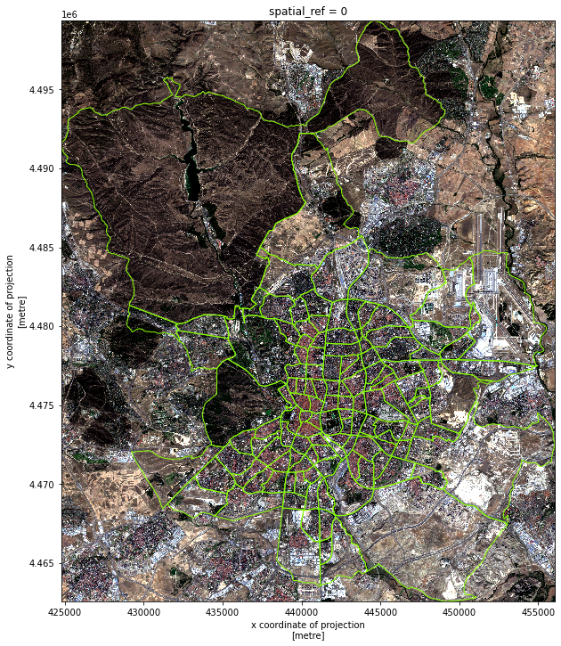

Madrid mosaic Sentinel 2#
import geopandas
import contextily
import rioxarray, xarray
import rasterio as rio
from numpy import percentile
import matplotlib.pyplot as plt
Identify tiles#
Load MGRS and Madrid
p = (
"https://github.com/developmentseed/titiler-digitaltwin/"\
"raw/36bf4cca96b84c79b2a299f7b5fde82ec87bb2e4/"\
"titiler_digitaltwin/data/grid.geojson"
)
p
'https://github.com/developmentseed/titiler-digitaltwin/raw/36bf4cca96b84c79b2a299f7b5fde82ec87bb2e4/titiler_digitaltwin/data/grid.geojson'
mgrs = geopandas.read_file(p)
mad = geopandas.read_file("neighbourhoods.geojson")
Intersect with MGRS to locate the tile in the 120m dataset
scene = mgrs[mgrs.contains(mad.unary_union)]
print(scene)
ax = scene.plot(color = "k", alpha=0.5)
contextily.add_basemap(ax, crs=scene.crs)
name geometry
211 30T POLYGON ((-5.67287 47.82258, -5.62777 46.92300...
For both datasets, we need the bounding box for Madrid expressed in the tiles’ CRS:
mad_bb = mad.to_crs(epsg=32630).total_bounds
120m Resolution#
Important
Please see here for more details
def build_da(
year,
month,
day,
tile,
bb,
base_url="https://sentinel-s2-l2a-mosaic-120.s3.amazonaws.com"
):
p = f"{base_url}/{year}/{month}/{day}/{tile}/XbX.tif"
# Connect to separate bands
full_red = rioxarray.open_rasterio(p.replace("XbX", "B04"))
full_green = rioxarray.open_rasterio(p.replace("XbX", "B03"))
full_blue = rioxarray.open_rasterio(p.replace("XbX", "B02"))
full_ir = rioxarray.open_rasterio(p.replace("XbX", "B08"))
bands = [full_red, full_green, full_blue, full_ir]
# Clip to bb
scene = []
for b in range(4):
band = bands[b].rio.clip_box(*bb)
scene.append(band)
scene = xarray.concat(scene, dim="band").astype(rio.uint16)
# Patch up meta-data
scene.coords["band"] = ["R", "G", "B", "NIR"]
return scene
Pull down scenes#
We will access data from the following dates:
dates = [
(2019, 1, 1),
(2019, 4, 1),
(2019, 7, 10),
(2019, 11, 27)
]
In a loop, we pull and write them out into its own GeoTiff:
%%time
for date in dates:
y, m, d = date
print(f"~~~~~Building {y}-{m}-{d}")
da = build_da(*date, "30T", mad_bb)
out_f = f"madrid_scene_s2_120_{y}-{m}-{d}.tif"
! rm -f $out_f
da.rio.to_raster(out_f)
! du -h $out_f
~~~~~Building 2019-1-1
628K madrid_scene_s2_120_2019-1-1.tif
~~~~~Building 2019-4-1
628K madrid_scene_s2_120_2019-4-1.tif
~~~~~Building 2019-7-10
628K madrid_scene_s2_120_2019-7-10.tif
~~~~~Building 2019-11-27
628K madrid_scene_s2_120_2019-11-27.tif
CPU times: user 12.5 s, sys: 2.42 s, total: 14.9 s
Wall time: 1min 48s
10m Resolution#
Important
Please see here for more details
Pull down bands#
Knowing the static URL to the COG file:
url = (
"http://jeodpp.jrc.ec.europa.eu/ftp/jrc-opendata/GHSL/"\
"GHS_composite_S2_L1C_2017-2018_GLOBE_R2020A/"\
"GHS_composite_S2_L1C_2017-2018_GLOBE_R2020A_UTM_10/"\
"V1-0/30T/S2_percentile_UTM_269-0000069888-0000000000.tif"
)
url
'http://jeodpp.jrc.ec.europa.eu/ftp/jrc-opendata/GHSL/GHS_composite_S2_L1C_2017-2018_GLOBE_R2020A/GHS_composite_S2_L1C_2017-2018_GLOBE_R2020A_UTM_10/V1-0/30T/S2_percentile_UTM_269-0000069888-0000000000.tif'
We can connect to it:
scene10m = xarray.open_rasterio(url).sel(band=[1, 2, 3])
And clip exactly the required box:
mad_scene = scene10m.rio.clip_box(*mad_bb)
Color correct#
def minmax(
a,
bottom=0,
top=255,
min_cut=2.5,
max_cut=97.5
):
vals = a.to_series().values
min_bin = percentile(vals, min_cut)
max_bin = percentile(vals, max_cut)
a = xarray.where(a > max_bin, max_bin, a)
a = xarray.where(a < min_bin, min_bin, a)
a_std = (a - a.min()) / (a.max() - a.min())
a_scaled = a_std * (top - bottom) + bottom
return a_scaled.astype(rio.uint8)
f, ax = plt.subplots(1, figsize=(12, 12))
mad_scene.groupby("band")\
.map(minmax)\
.plot.imshow(ax=ax)
mad.to_crs(mad_scene.rio.crs).plot(
ax=ax, facecolor="none", edgecolor="xkcd:lime green", linewidth=1
);

Write out true color#
out_f = "madrid_scene_s2_10_tc.tif"
! rm -f $out_f
mad_scene.groupby("band")\
.map(minmax)\
.astype(rio.uint8)\
.rio.to_raster(out_f)
! du -h $out_f
33M madrid_scene_s2_10_tc.tif